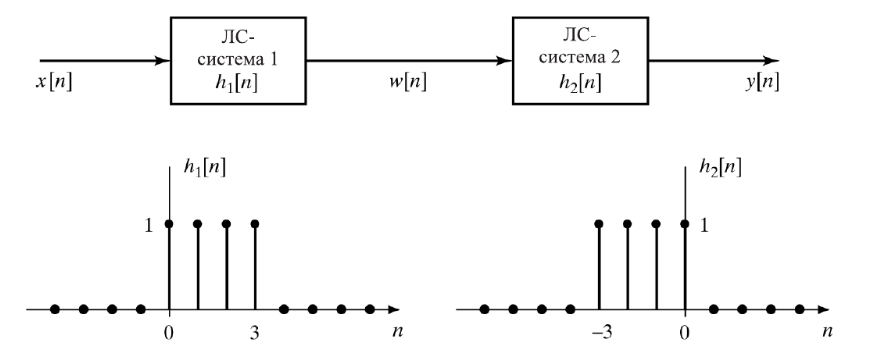

Осенний семестр
2 задание: разложение в ряд Фурье
Вам дано готовое разложение функции f(t) = |t|: $$f(t) = \frac{\pi}{2} - \frac{4}{\pi}(cost + \frac{1}{9}cos3t + \frac{1}{25}cos5t + ...) = $$ $$= \frac{\pi}{2} - \frac{4}{\pi}(\sum_{k=0}^{\infty}\frac{1}{(2k+1)^2}cos(2k+1)) $$ Необходимо:
1. Найти коэффициенты комплексного разложения в ряд Фурье
2. Нарисовать приближение функции первыми 5, 10, 25, 50, 100 членами комплексного разложения
3. Нарисовать спектр мощности
4. Построить график погрешности приближения исходной функции конечной суммой
3 задание: форманты русских гласных
1. Записать все гласные собственным голосом
2. Применив оконную функцию, вычислить спектры гласных в логарифмическом масштабе
3. Составить таблицу значений формант, найдя максимумы спектральной огибающей
4 задание: классификация согласных
1. Возьмите файлы размеченного на аллофоны корпуса
2. Придумайте спектральный критерий, позволяющий отделить звонкие взрывные согласные от сонантов
3. Проверьте точность определения классов согласных по вашему критерию на корпусе (отношение правильно угаданных ответов к общему количеству согласных указанных классов)
Весенний семестр
1 задание: вычисление линейной свертки
1. На рисунке ниже слева изображена импульсная характеристика ЛС-системы h[n], а справа - входной сигнал x[n]. Вычислите и нарисуйте выходной сигнал y[n].

2. На рисунке ниже изображен каскад двух ЛС-систем. Определите w[n] и выходной сигнал y[n], если входной сигнал такой же, как в предыдущей задаче.
